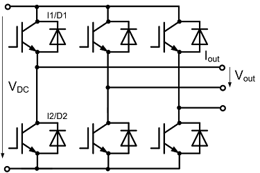

Este programa automatiza as simulações de perdas em semicondutores realizadas através do Iposim, ferramenta de simulação da empresa Infineon.
As simulações são realizadas utilizando a topologia de inversor trifásico de 2 níveis, conforme a imagem abaixo:

As instruções abaixo vão apresentar as informações necessárias para instalar e rodar o programa corretamente.
Para rodar esse programa é necessário ter o Mozilla Firefox versão 60 ou superior que pode ser baixado neste link.
Baixe e instale o arquivo disponível neste link.
Abra o programa a partir do atalho gerado na área de trabalho.
Utilizando o botão "Select input file", selecione o arquivo com a tabela contendo as informações das simulações que deseja rodar. Um arquivo de exemplo é disponibilizado na pasta "examples" no local onde o programa foi instalado. É importante que os nomes das colunas pré-existentes no arquivo de simulação não sejam alterados.
Utilize o botão "Select output folder" para definir em qual pasta será salvo o arquivo com os resultados de simulação.
Insira seus dados de login do site do Iposim nos campos "Iposim e-mail" e "Iposim password". Caso não tenha uma conta, é possível criar uma nova neste link.
Após entrar com os dados, utilize o botão "Simulate" e aguarde a finalização da simulação observando as informações na tela. Ao final, o arquivo de resultados estará disponibilizado na pasta escolhida.